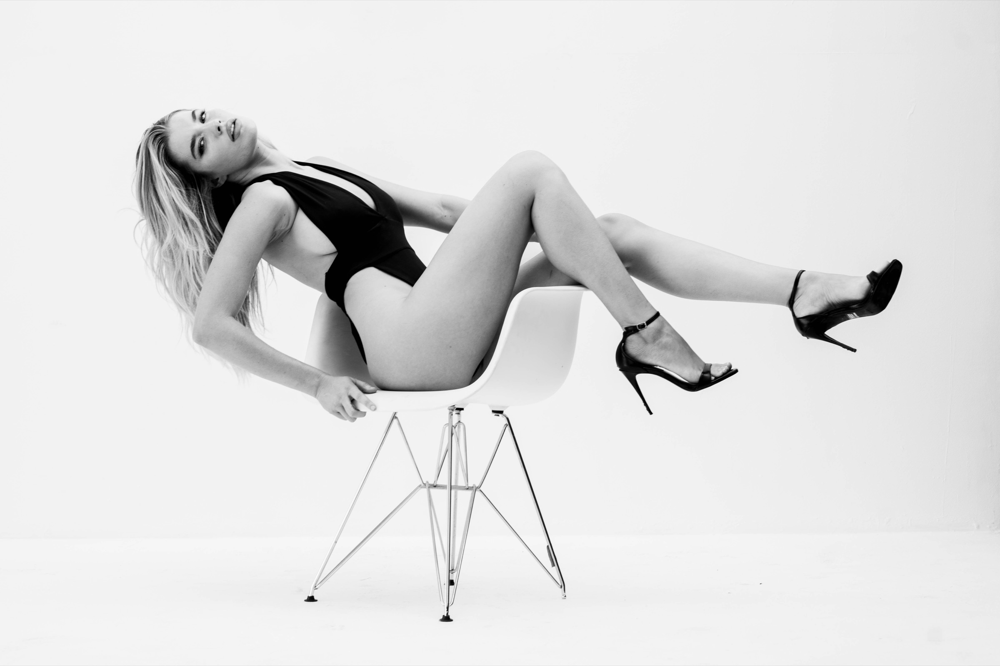
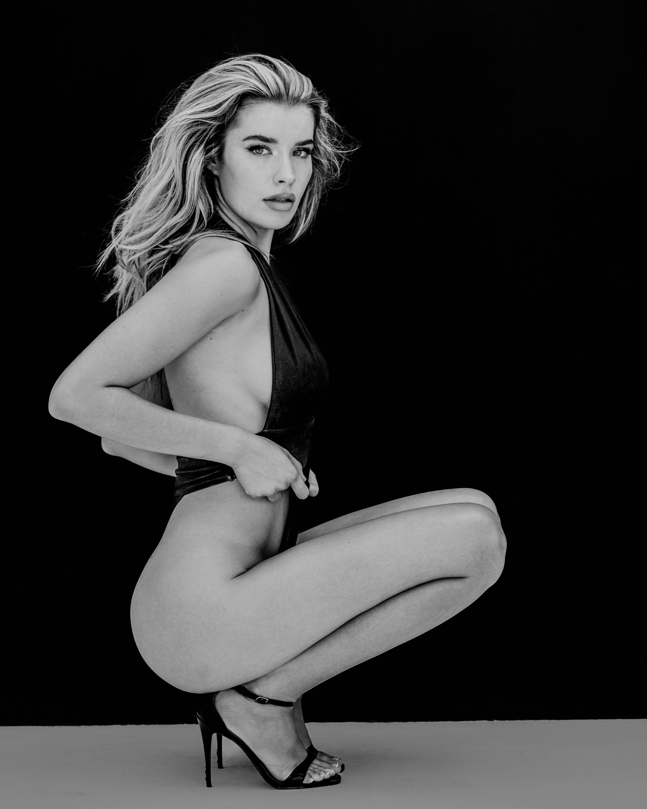

In black and white, time gets weird. The images could be from last week or thirty years ago. Lainey wears that ambiguity well — there’s something classic about her presence, but the attitude is firmly right now.
No color, no elaborate set, no visual noise. Just Lainey, a slice of light, and the quiet tension between the two. The more we stripped away, the more the frames started to feel honest.
This series is less about perfection and more about presence. Small shifts in expression, tiny asymmetries, the way Lainey breathes between frames — all of it sits right on the surface in black and white. Nothing to soften it, nothing to cover it up. Just the image, and whatever you bring to it.